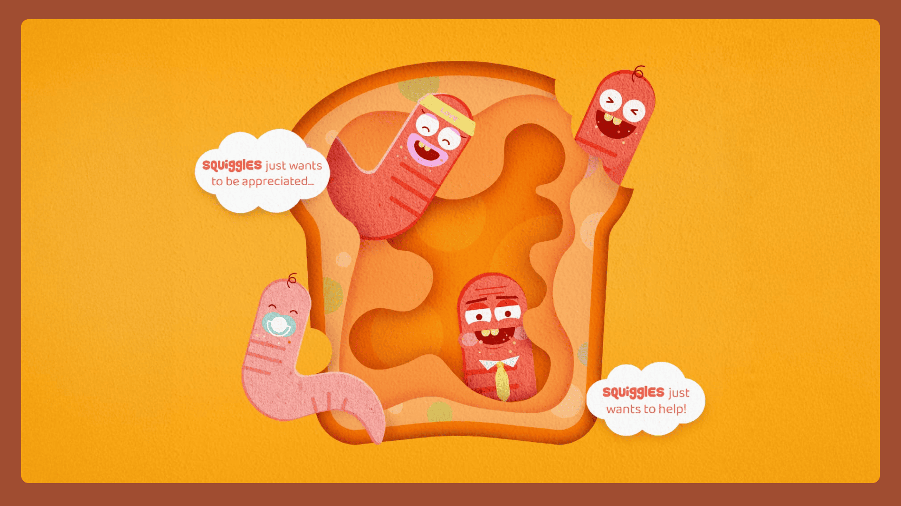
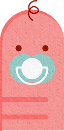
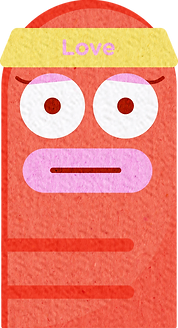
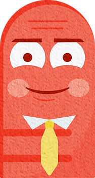
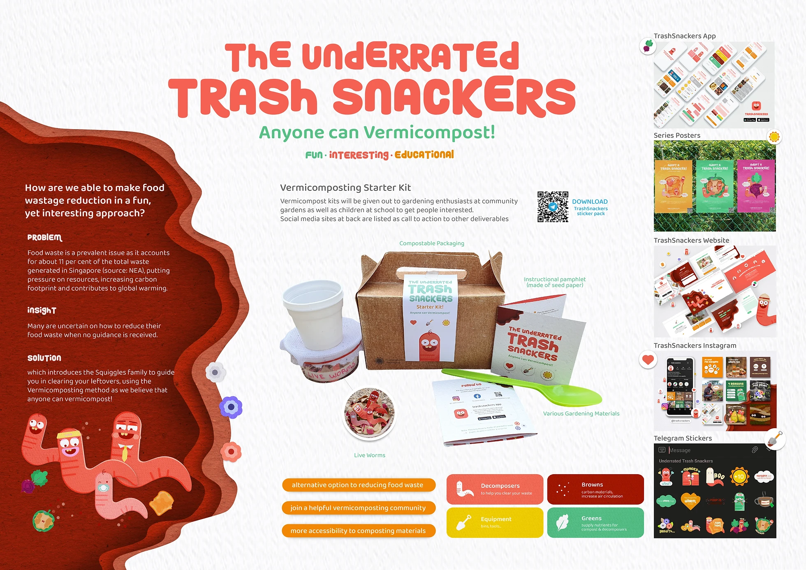
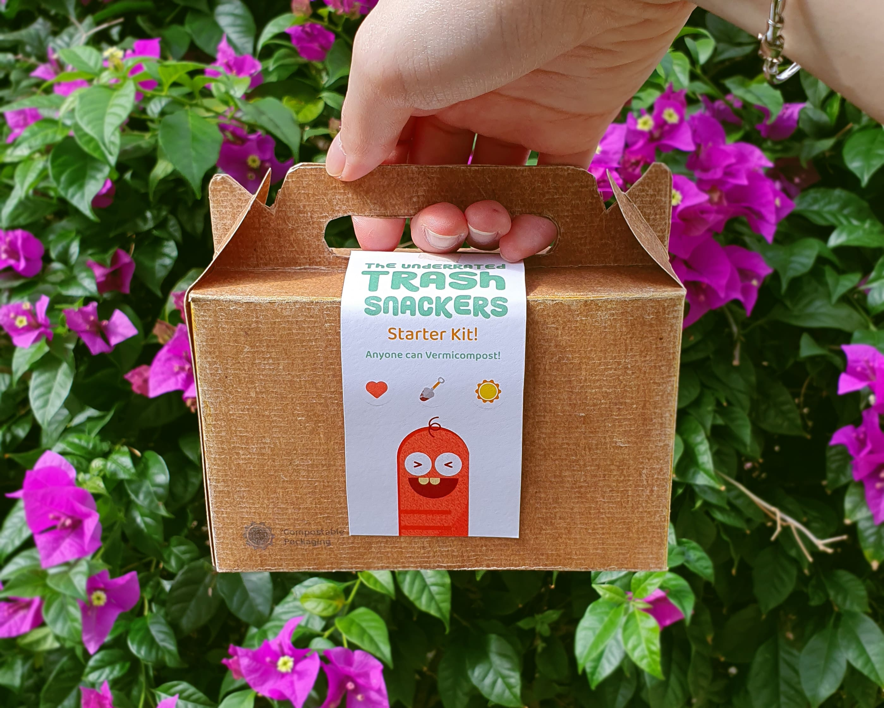
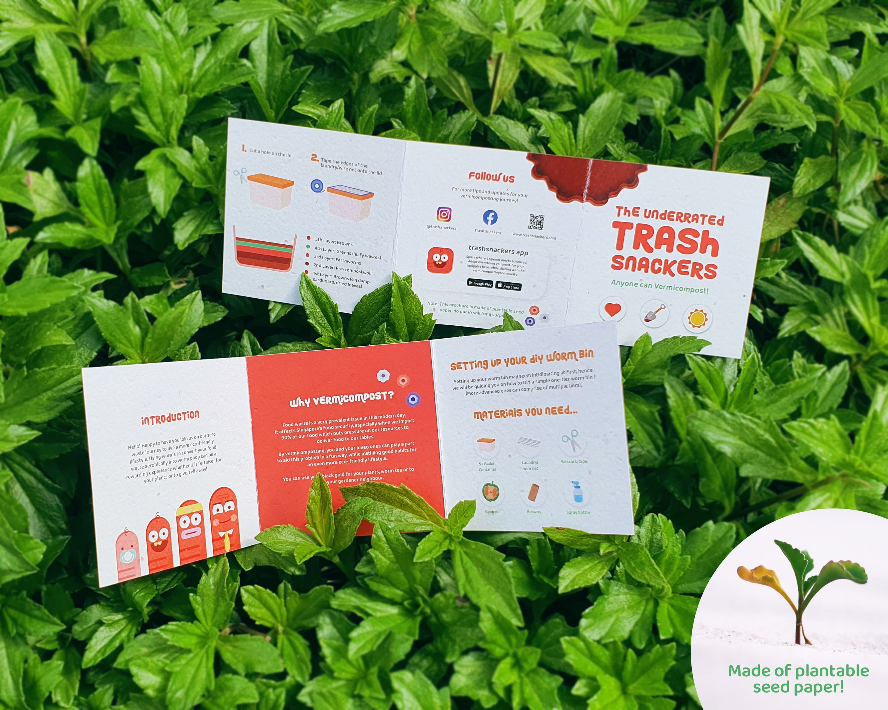
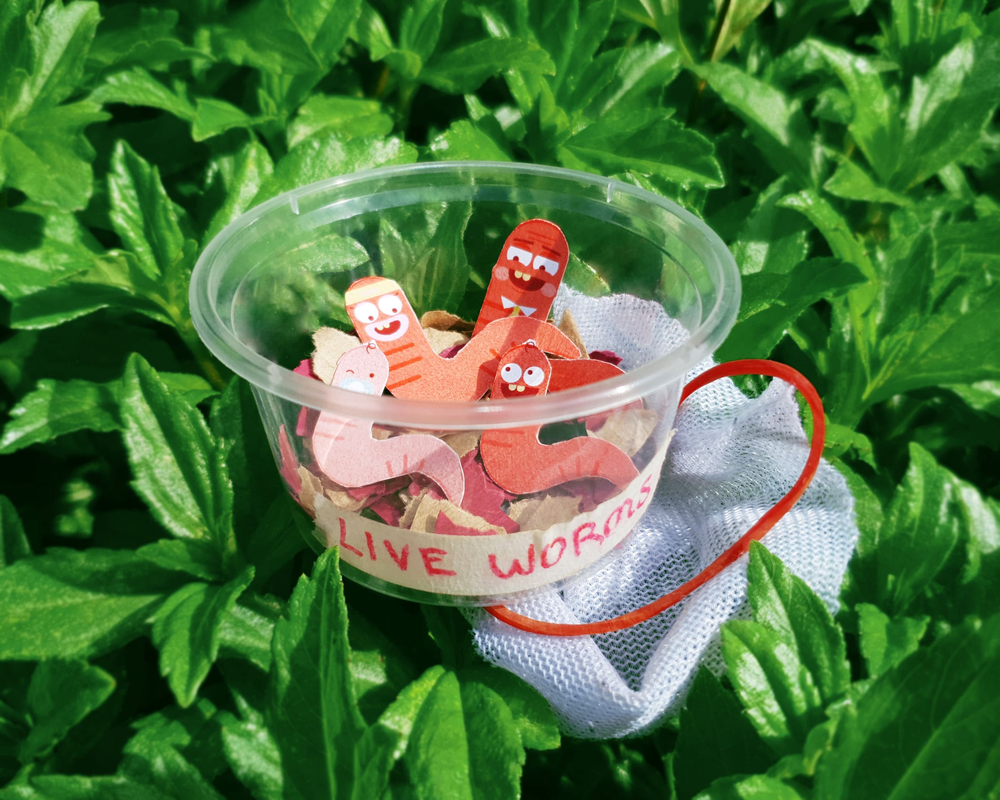
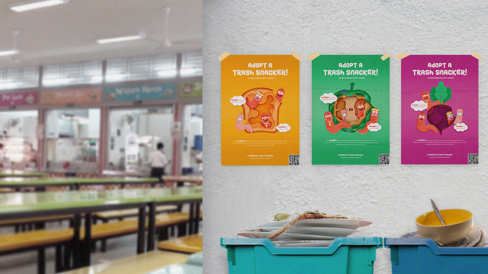
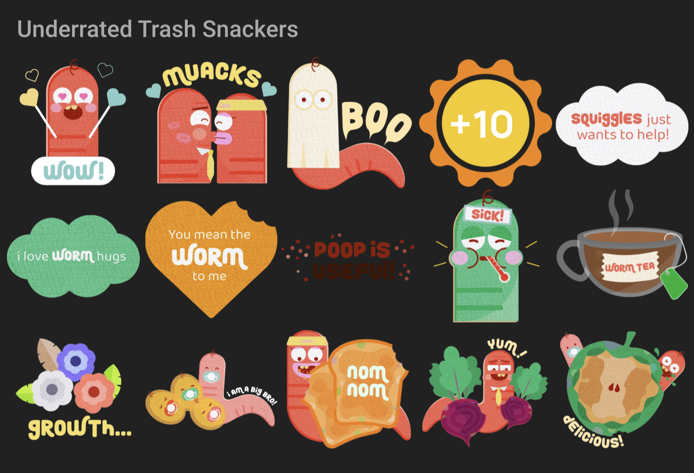

Underrated Trash Snackers
Advertising Campaign
Art Direction
2021
"Self-initiated project conceptualising an integrated campaign, transforming vermicomposting into a fun family routine to reduce food waste."
The Underrated Trash Snackers is campaign aimed to make food wastage reduction a fun, interesting and educational approach for people of varying ages to implement into their daily lives. It was a passion project I started to raise awareness about food waste and vermicomposting, a method of composting using worms.
My Contributions
Timeline
🏆 Crowbar Awards 2021 (Issued by The Association of Advertising and Marketing Singapore): 4 Silvers, 2
Bronzes, 1 Finalist




The Underrated Trash Snackers is campaign aimed to make food wastage reduction a fun, interesting and educational approach for people of varying ages to implement into their daily lives.
Campaign Case Film
Campaign Board

Activation: Vermicomposting Starter Kit
Given to community gardeners, school students to try vermicomposting for themselves.





Adopt A Trash Snacker! Posters
Placed at community gardens and school canteens to break stereotypes of worms, urge users to go to the TrashSnackers website to find out more through the QR code.



TrashSnackers Website
Users can visit the TrashSnackers website to check out the brands’s vision and upcoming workshops. Companies and schools are also encouraged to collaborate with us to inculcate vermicomposting habits into their workplace. It also serves as a Call-To-Action to TrashSnackers App.

TrashSnackers App
Users can download to join a community of vermicomposters where they give and take composting materials.

TrashSnackers Instagram (social media)
Reach more people while bringing the community closer. Tips, stories and future events are posted here.

Telegram Stickers
Users can use Squiggles in their daily conversations and send them to their loved ones.
